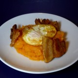

PATATAS REVOLCONAS
Ingredientes
- 500 g de patatas --variedad Bintje, Monalissa o Kennebec
- 3 cuch de aceite OVE
- 1 diente de ajo picado
- 1/2 cuch de pimentón (paprika) dulce
- 1 pizca de pimentón picante --opcional y no imprescindible
- Sal y pimienta
- 1 hoja de laurel
- 2 lonchas de panceta fresca
- 4 huevos muy frescos
- Aceite OVE para freír

Pelar las patatas, lavarlas y triscarlas o cacharlas en cachelos de 2-3 cm. Calentar el aceite –3 cucharadas– en un pucherete de barro o una cazuela pequeña con el diente de ajo picado. Sofreír las patatas 1-2 minutos. Hacer un hueco en el fondo del pucherete o la cazuela y sofreír unos momentos el pimentón dulce y la cantidad que se desee de pimentón picante. Añadir de inmediato el agua suficiente para cubrir del todo las patatas, el laurel, un poco de sal y una pizca de pimienta. Dejar cocer a fuego suave, pero sin que desaparezca el hervor, hasta que las patatas empiezan a deshacerse. Revolverlas a menudo para que se vayan deshaciendo pero que entre este puré siempre haya algún que otro pedazo pequeño de patata. Probar de sal y corregir. Al final tiene que quedar con una textura como se aprecia en la foto.
Mientras se terminan las patatas freír en una sartén la panceta en 2 trozos cada loncha hasta convertirla en torreznos crujientes en la grasa que irán soltando.
Calentar AOVE en una sartén pequeña y honda y freír los huevos.
Servir de inmediato todo junto.

NOTA: Cachar o triscar quiere decir cortar un trozo de patata de unos 3 cm sin llegar a separarlo del todo de la patata, solo hasta la mitad, para arrancar lo que falta. No sé la razón, pero así las patatas quedan mejor.